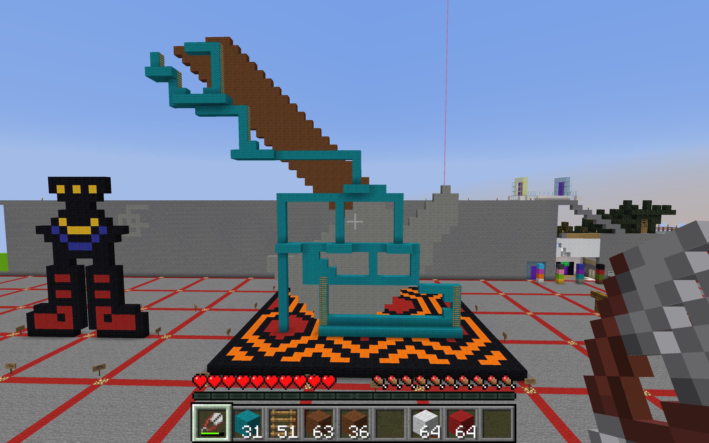
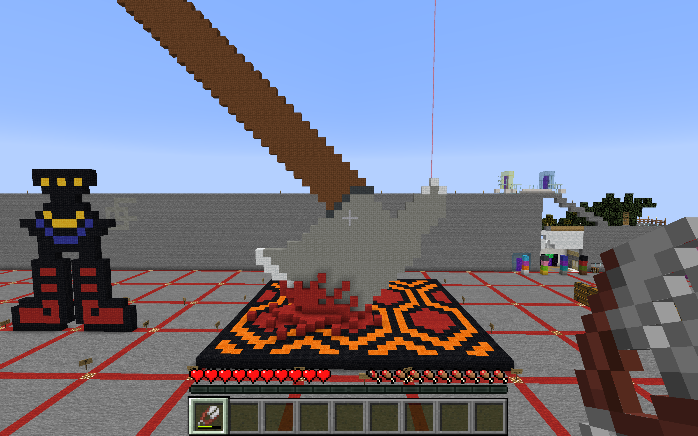

1. recognize qualities of a virtual environment 2. understand the construction of objects in the 3D space 3. extract data from one space and know where it can go
I chose the film The Shining as my cultural reference. I decided to do both the infamous carpet pattern from the Overlook Hotel as well as the axe that Jack Torrance (and Delbert Grady) uses to attack his family. The Shining is my favorite novel by Stephen King and one of my favorite films by Stanley Kubrick.
I believe these objects from The Shining are culturally significant for many reasons. The Shining is a classic American horror film as the novel was written by American author Stephen King and the film was directed by American film director Stanley Kubrick. The Shining is an important part of American pop-culture. Many artists have been inspired by The Shining and have taken references from both the novel and the film.



Zoe Brazil
ART 74 Section 02 Fall 2020